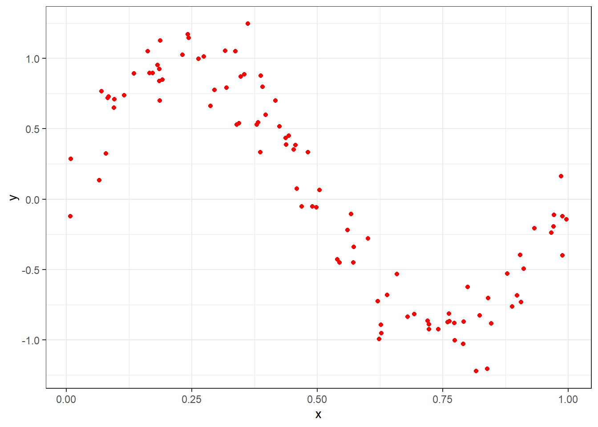
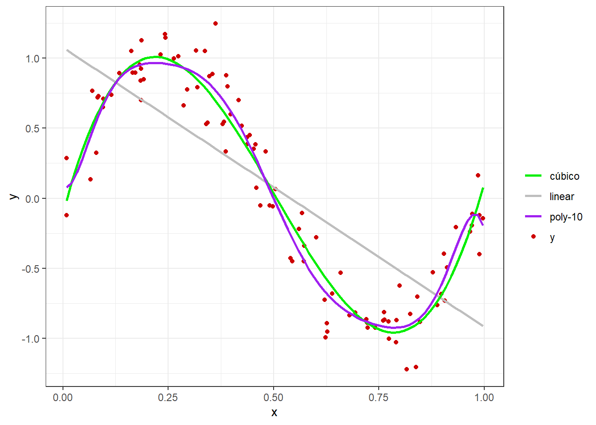
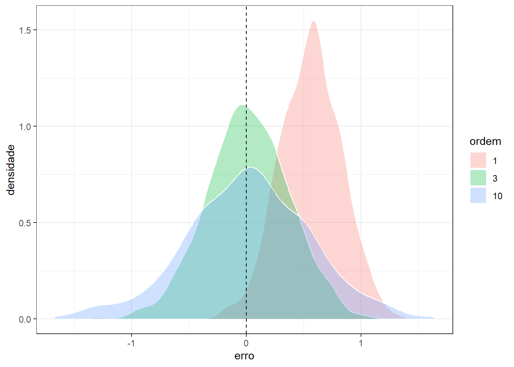
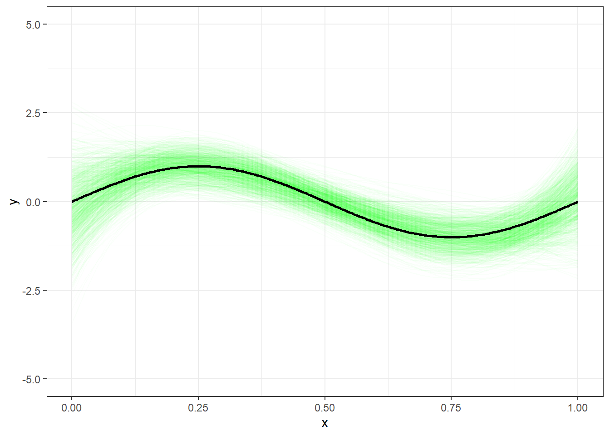
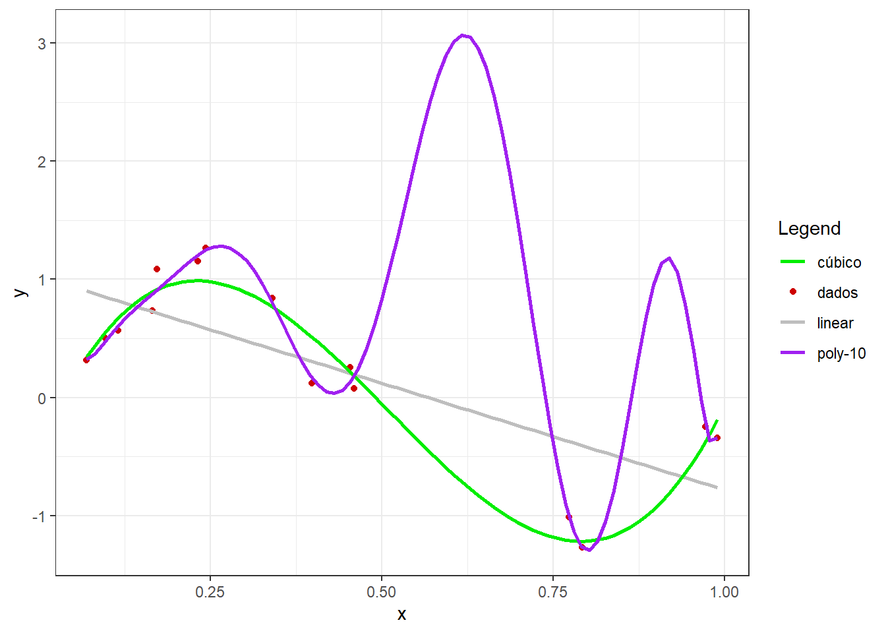
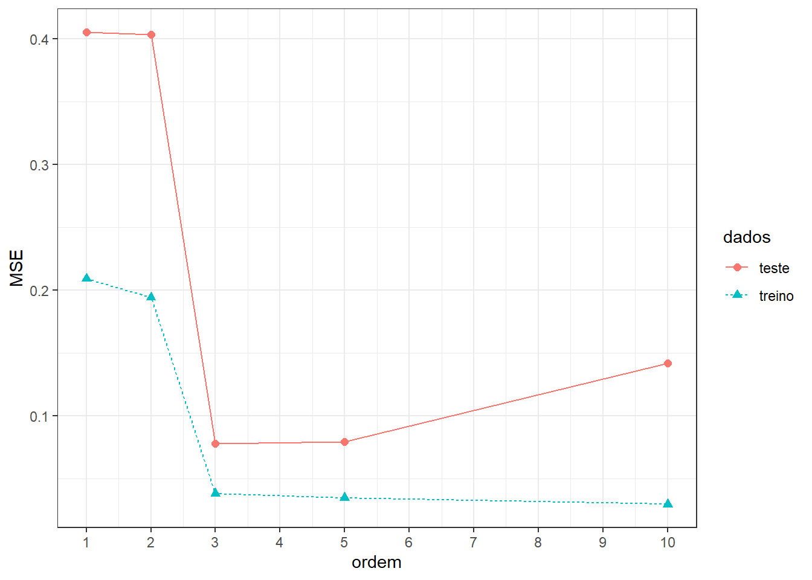

2 Conflito entre vício e variância no aprendizado supervisionado
2.1 Intuição e conflito entre vício e variância em problemas de regressão
Seja uma variável regressora ou independente \(x \in \mathbb{R}\) e uma resposta ou variável dependente igualmente medida em uma escala contínua, \(y \in \mathbb{R}\).
Deseja-se aproximar uma função desconhecida, \(f(x)\), que relaciona \(y\) e \(x\). Tal aproximação pode ser feita minimizando uma função perda, \(L(y,f(x))\), que mede os erros de previsão.
A função perda mais comum para problemas de regressão é a função perda quadrática, conforme segue.
\[ L(y,f(x)) = (y-f(x))^2 \]
Seja um conjunto de dados disponível, \(D = {(x_1,y_1), (x_2,y_2), ..., (x_n,y_n)}\), conforme o observado graficamente na Figura 3.1. As observações da variável independente podem ser descritas em relação à função desconhecida adicionada de um termo de erro, \(y = f(x) + \varepsilon\), \(E(\varepsilon)=0\), \(Var(\varepsilon) = \sigma^2_\varepsilon\). O erro das medições tem variância \(Var(\varepsilon) = \sigma^2_\varepsilon\) e consiste no erro irredutível. Este erro está associado à qualidade dos dados. Portanto, sua variabilidade terá implicação no erro do modelo estimado.
Seja um amplo número de cojuntos de dados \(D\) distintos e tomados de forma independente da população, todos de tamanho \(N\). Para um destes podemos aplicar um algoritmo para obter uma aproximação \(\hat f_D(x)\). Obviamente cada conjunto de dados resultará em uma aproximação diferente, com perda distinta. Para medir o desempenho de um algoritmo ou método pode-se considerar a média de todos modelos obtidos via conjuntos de dados distintos.
Seja o erro quadrático de um modelo em relação à função desconhecida.
\[ \{\hat f_D(x) - f(x)\}^2 \]
Seja a média de distintos modelos considerando distintos data sets, \(E_D[\hat f_D(x)]\). Somando e subtraindo este termo dentro da perda quadrática, tem-se:
\[ \begin{align} \{\hat f_D(x) - f(x)\}^2 =& \{\hat f_D(x) - E_D[\hat f_D(x)] + E_D[\hat f_D(x)] - f(x)\}^2\\ \{\hat f_D(x) - f(x)\}^2 =& \{\underbrace{(\hat f_D(x) - E_D[\hat f_D(x)])}_\text{a} + \underbrace{(E_D[\hat f_D(x)] - f(x))}_\text{b}\}^2\\ \end{align} \]
Desenvolvendo o quadrado, tem-se:
\[ \begin{align} \{\hat f_D(x) - f(x)\}^2 = (\hat f_D(x) - E_D[\hat f_D(x)])^2 + 2(\hat f_D(x) - E_D[\hat f_D(x)])(E_D[\hat f_D(x)] - f(x)) + (E_D[\hat f_D(x)] - f(x))^2 \end{align} \]
Tomando a média (esperança, \(E\)) em relação ao conjuntos de dados, \(D\), o segundo termo se anulará, pois \(E_D \{\hat f_D(x) - E_D[\hat f_D] \}\)=0. Logo:
\[ E_D\{\hat f_D(x) - f(x)\}^2 = \underbrace{E_D\{\hat f_D(x) - E_D[\hat f_D(x)]\}^2}_\text{variância} + \underbrace{\{E_D[\hat f_D(x)] - f(x)\}^2}_\text{vício} \]
Tem-se para o vício:
\[ \begin{aligned} Vicio_D[\hat f(x_0)] &= E_D[\hat f(x_0) - f(x_0)] = E_D[\hat f(x_0) - (y + \varepsilon)] \\ Vicio_D[\hat f(x_0)] &= E_D[\hat f(x_0)] - E_D[y] \end{aligned} \]
E para a variância:
\[ \begin{aligned} Var_D[\hat f(x)] &= E_D[(\hat f_D(x) - E_D{\hat f(x)})^2] \end{aligned} \]
Seja o ajuste aos dados disponíveis de três modelos de regressão com distintas complexidades, um linear, um cúbico e um modelo polinomial de décima ordem.
Tais modelos apresentam as seguintes formas:
\[ \begin{matrix} y_1 = \beta_0 + \beta_1x\\ y_3 = \beta_0 + \beta_1x + \beta_2x^2 + \beta_3x^3\\ y_{10} = \beta_0 + \beta_1x + \beta_2x^2 + \beta_3x^3 + \beta_4x^4 + ... + \beta_{10}x^{10} \end{matrix} \]
Os modelos são estimados por mínimos quadrados e plotados com os dados na Figura 2.2.

Tomando um valor arbitrário de \(x = x_0\), e \(M\) conjuntos distintos de observações futuras, \(d_1=(x_1,y_1)_1, ..., (x_n,y_n)_1\), \(d_2=(x_1,y_1)_2, ..., (x_n,y_n)_2\), \(\ldots, d_M=(x_1,y_1)_M, ..., (x_n,y_n)_M\), é possível medir o vício e a variância das estimativas obtidas por \(\hat f(x)\) para um \(x=x_0\) específico. A Figura 2.3 compara graficamente o resultado de tais modelos em observações futuras via boxplots, enquanto a Figura 2.4 faz a mesma comparação usando gráficos de densidade amostral. Pelos gráficos pode-se observar que o modelo linear apresenta maior vício e menor variância, enquanto o modelo polinomial de décima ordem apresenta baixo vício, porém maior variância. Este exemplo ilustra o conflito entre vício e variância. Deve-se buscar um modelo que apresente equilíbrio entre ambas medidas.


A Tabela 2.1 apresenta valores de vício, enquanto a Tabela 2.2 apresenta valores de variância dos modelos segundo a ordem ou complexidade entre os mesmos. Observa-se que o modelo de menor grau e, portanto, menor complexidade, apresenta alto vício, porém baixa variância. Já o modelo de maior grau, ou maior complexidade, apresenta baixo vício, porém alta variância.
| ordem | vicio |
|---|---|
| 1 | 0.3134804 |
| 3 | 0.0002074545 |
| 10 | 0.0002207692 |
| ordem | var |
|---|---|
| 1 | 0.07020973 |
| 3 | 0.1268333 |
| 10 | 0.2922431 |
A Figura 2.5 plota os 1000 modelos cúbicos obtidos com distintos conjuntos de dados em verde em torno do modelo real. Pode-se observar que o conjunto de dados pode influenciar nos modelos, mas a média de diversos modelos cúbicos certamente apresentará um bom equilíbrio entre vício e variância para estes dados.

Em casos onde o número de observações é baixo o conflito entre vício e variância pode ficar mais claro. Considerando o exemplo plotado na Figura 2.6, pode-se observar que enquanto o modelo linear apresenta um baixo ajuste, o modelo polinomial de décima ordem apresenta um sobreajuste, uma vez que praticamente interpola os dados disponíveis. Este último apresentará um ajuste muito além do real, uma vez que sua capacidade não se confirmará para dados futuros.

A Figura 2.7 apresenta o erro ou valor da função perda de tais modelos para dados de treino e dados de teste ou futuros.

Pode-se observar que para os dados de treino, à medida que se aumenta a complexidade do modelo ajustado o erro diminui. Entretanto, o mesmo não acontece para os dados futuros ou de teste do modelo.
Quando um modelo apresenta alto erro tanto para os dados de treino quanto para os dados de teste, ele é considerado um modelo com baixo ajuste. Quando um modelo apresenta baixo erro para os dados de treino, mas alto erro para os dados de teste, ele é considerado um modelo com sobreajuste. É importante diagnosticar o sobreajuste uma vez que o bom ajuste aos dados de treino pode dar a ilusão de um modelo perfeito, porém, a avaliação do modelo em dados futuros confirma a dificuldade de generalização deste tipo de modelo.
O melhor modelo seria aquele que apresenta mais proximidade entre os erros para os dados de treinamento e teste, que, no exemplo dado, seria o de terceira ordem.
2.2 Implementações em R
A seguir serão expostas as implementações necessárias para obter os resultados do capítulo.
Carregando as bibliotecas (pacotes) para análise.
library(ggplot2)
library(dplyr)Criando uma função para simular o conflito. Na prática tal função é desconhecida; portanto deseja-se aproximá-la apartir dos dados.
f_sin <- function(x) {
f <- sin(2*pi*x)
return(f)
}Simulando dados. x foi simulado segundo uma distribuição uniforme com limites entre 0 e 1. y foi simulado avaliando os valores de x na função criada previamente adicionando um termo de erro segundo a distribuição normal com média nula e desvio-padrão igual a 0.2.
set.seed(7)
x <- runif(100,0,1)
data <- data.frame(x = x,
y = f_sin(x) + rnorm(100, 0, .2))
knitr::kable(head(data))Plotando.
ggplot(data, aes(x,y)) +
geom_point(col="red") +
theme_bw()Plotando os dados disponíveis acompanhados de três modelos de regressão polinomial simples, um linear, um cúbico e um de décima ordem.
colors <- c("y" = "red3", "linear" = "grey", "cúbico" = "green2", "poly-10" = "purple")
ggplot(data, aes(x,y)) +
geom_point(aes(color = "y")) +
geom_smooth(method = lm, formula = y ~ x, se = F, aes(color = "linear")) +
geom_smooth(method = lm, formula = y ~ poly(x, degree = 3, raw = TRUE),
se = F, aes(color = "cúbico")) +
geom_smooth(method = lm, formula = y ~ poly(x, degree = 10, raw = TRUE),
se = F, aes(color = "poly-10")) +
labs(color = "Legend") +
scale_color_manual(values = colors) +
theme_bw()Tomando um valor arbitrário de \(x = 075\), e conjuntos distintos de observações futuras para medir o vício e a variância de cada modelo.
set.seed(7)
pred <- data.frame(model = numeric(3000),
pred = numeric(3000),
vicio = numeric(3000))
x0=0.75
i<-1
E_y <- f_sin(x0)
E_yfor (k in 1:999) {
data_ <- data.frame(x = x,
y = f_sin(x) + rnorm(100, 0, 2))
lm1 <- lm(y ~ x, data_)
lm3 <- lm(y ~ poly(x, degree = 3, raw = TRUE), data_)
lm10 <- lm(y ~ poly(x, degree = 10, raw = TRUE), data_)
pred1 <- predict(lm1, newdata = data.frame(x=x0))
pred3 <- predict(lm3, newdata = data.frame(x=x0))
pred10 <- predict(lm10, newdata = data.frame(x=x0))
vicio1 <- pred1 - E_y
vicio3 <- pred3 - E_y
vicio10 <- pred10 - E_y
pred$model[i] <- 1
pred$model[i+1] <- 3
pred$model[i+2] <- 10
pred$pred[i] <- pred1
pred$pred[i+1] <- pred3
pred$pred[i+2] <- pred10
pred$vicio[i] <- vicio1
pred$vicio[i+1] <- vicio3
pred$vicio[i+2] <- vicio10
i <- i + 3
} ggplot(pred, aes(x=as.factor(model),y=vicio, col = as.factor(model))) +
geom_boxplot() +
geom_jitter(alpha = .1) +
geom_hline(yintercept = 0, linetype=2) +
labs(x = "ordem", y = "erro") +
theme_bw() +
theme(legend.position="none")ggplot(pred, aes(x=vicio, fill = as.factor(model))) +
geom_density(alpha = .3, col = "white") +
geom_vline(xintercept = 0, linetype=2) +
labs(y="densidade", x = "erro", fill = "ordem") +
theme_bw()Simulando o conflito para um caso com poucas observações disponíveis.
set.seed(7)
xa <- runif(15,0,1)
dataa <- data.frame(x = xa,
y = f_sin(xa) + rnorm(15, 0, .2))
colors <- c("y" = "red3", "linear" = "grey", "cúbico" = "green2", "poly-10" = "purple")
ggplot(dataa, aes(x,y)) +
geom_point(aes(color = "y")) +
geom_smooth(method = lm, formula = y ~ x, se = F, aes(color = "linear")) +
geom_smooth(method = lm, formula = y ~ poly(x, degree = 3, raw = TRUE),
se = F, aes(color = "cúbico")) +
geom_smooth(method = lm, formula = y ~ poly(x, degree = 10, raw = TRUE),
se = F, aes(color = "poly-10")) +
labs(color = "Legend") +
scale_color_manual(values = colors) +
theme_bw()Erro ou valor da função perda de tais modelos para dados de treino e dados de teste.
set.seed(7)
xa <- runif(20,0,1)
dataa <- data.frame(x = xa,
y = f_sin(xa) + rnorm(20, 0, .2))
lm1a <- lm(y ~ x, dataa)
lm2a <- lm(y ~ poly(x, degree = 2, raw = TRUE), dataa)
lm3a <- lm(y ~ poly(x, degree = 3, raw = TRUE), dataa)
lm5a <- lm(y ~ poly(x, degree = 5, raw = TRUE), dataa)
lm10a <- lm(y ~ poly(x, degree = 10, raw = TRUE), dataa)
set.seed(27)
xb <- runif(20,0,1)
datab <- data.frame(x = xb,
y = f_sin(xb) + rnorm(20, 0, .2))
MSE <- function(obs, pred) {
MSE <- mean((obs - pred)^2)
return(MSE)
}
MSE1_T <- MSE(dataa$y, lm1a$fitted.values)
MSE2_T <- MSE(dataa$y, lm2a$fitted.values)
MSE3_T <- MSE(dataa$y, lm3a$fitted.values)
MSE5_T <- MSE(dataa$y, lm5a$fitted.values)
MSE10_T <- MSE(dataa$y, lm10a$fitted.values)
yhat1 <- predict(lm1a, newdata = datab)
yhat2 <- predict(lm2a, newdata = datab)
yhat3 <- predict(lm3a, newdata = datab)
yhat5 <- predict(lm5a, newdata = datab)
yhat10 <- predict(lm10a, newdata = datab)
MSE1_t <- MSE(datab$y, yhat1)
MSE2_t <- MSE(datab$y, yhat2)
MSE3_t <- MSE(datab$y, yhat3)
MSE5_t <- MSE(datab$y, yhat5)
MSE10_t <- MSE(datab$y, yhat10)
data_MSE <- data.frame(model = rep(c(1,2,3,5,10),2),
dados = c(rep("treino",5),rep("teste",5)),
MSE = c(MSE1_T, MSE2_T, MSE3_T, MSE5_T, MSE10_T,
MSE1_t, MSE2_t, MSE3_t, MSE5_t, MSE10_t))
ggplot(data_MSE, aes(x=model, y = MSE,
col = dados,
linetype = dados,
pch = dados)) +
geom_point(size=2) +
geom_line() +
labs(x = "ordem") +
scale_x_continuous(breaks = 1:10) +
theme_bw()Referências
Bishop, Christopher M., and Hugh Bishop. “Deep learning: foundations and concepts.” (2024).